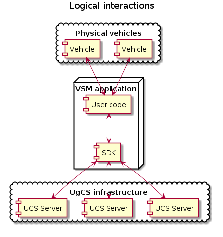

Overview¶
Purpose¶
The purpose of VSM C++ SDK (further referred as SDK) is to create Vehicle Specific Modules (VSM) for Universal Ground Control Software(UgCS). Most importantly, SDK can be considered as a “glue” layer between VSM application user code which is able to interact with physical vehicles and UgCS infrastructure:
{kind=link}
However, SDK is not limited to that. It facilitates (but not forces) developers to create cross-platform VSM applications using only features provided by SDK itself without using 3rd party libraries like Boost, Qt and similar.
Design goals¶
Efficiency
To achieve that, C++ programming language (C++14 standard) is used for SDK implementation and also is a requirement for VSM application development.
Universality
SDK provides additional cross-platform features which are considered to be demanded in a typical VSM application, for example:
File I/O using ugcs::vsm::File_processor.
Networking I/O using ugcs::vsm::Socket_processor.
Serial I/O using ugcs::vsm::Serial_processor.
Logging using ugcs::vsm::Log.
Asynchronous programming (see Asynchronous programming framework).
Coordinates manipulation using ugcs::vsm::Position.
Configuration file management using ugcs::vsm::Properties.
The usage of additional features, however, is not mandated. VSM application developer is free to use platform-specific methods or any other libraries to communicate with vehicles and for other purposes. To facilitate cross-platform compilation, CMake build system is utilized by SDK.
Developer friendliness
SDK is mainly targeted for experienced developers and complex VSM applications and scenarios, but in the same time SDK can be used in a simple way by beginners or when one wants to play around with the simplest possible VSM application and gradually extend it:
Usage¶
The usage of SDK consists of the following:
General guidelines
Start here.
building_page
Vehicle interface
Should be used by VSM application developer to communicate with UgCS.
Additional functionality
Functionality not specific to UgCS, but provided for convenient cross-platform VSM application development. It is technically possible to develop a VSM application without using of additional functionality provided by SDK. Please note, that some additional features are dependent, for example, in order to use ugcs::vsm::Mavlink_decoder, the ugcs::vsm::Io_buffer should also be used. Following tutorials explains the usage of additional functionality: